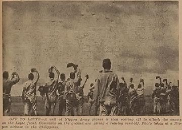

|
j
a v a s c r i p t |
Pg.2/2
October 29, 1944 — Sunday
Tokyo, October 27 — Etsuzo Kurihara, Chief of the Navy Press Section of Daihon-ei: "U.S. loses 680,000 tons of shipping." He puts personnel losses at 14,300; conservative, he says because he only counts 2/3 of the crew as casualties when a ship is "blitz-sunk," 1/3 for "ordinary" sinkings, and 1/10 for ships "damaged." He also took into consideration "the great pains taken by the enemy navy to save its personnel because of the great manpower shortage in the U.S." (Apparently the humanitarian angle or even the reusable skills of the crew doesn't occur to him.) Furthermore, the lack of carrier raids over the P.I. is "proof" that "almost all the enemy carrier force has been wiped out." Then he adds, jokingly, that as it took the Americans one whole year to recover from Pearl Harbor, it should take them three years to recover from the Battle of the Philippines because the damage was three times greater. Well, after today's raids, he'll be silent for a week.

Off to Leyte go Nippon Army planes
LEYTE News: The Americans have taken Carigara and Pastrana with some losses, are one mile from Dagami, and encountering desperate Japanese delaying actions in Alangalang. Japanese raids over Leyte continue; 20 planes were downed yesterday, and two crash-dived onto Liberty ships. LEYTE GULF BATTLES: A Japanese destroyer was sunk and a light cruiser damaged in the Camotes Sea, while another destroyer was damaged off Cebu. None of the 16 Japanese ships that entered the Surigao Strait escaped — the last six were sunk later. On the Strait itself, many survivors were picked up, including the captain of a Japanese destroyer. The two battleships sunk were the Fuso and Yamashiro. |
|
|
|
|